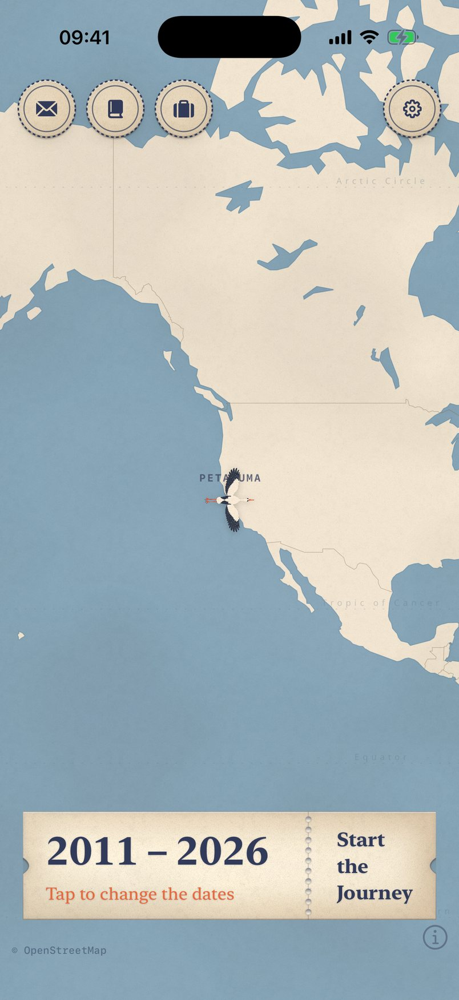
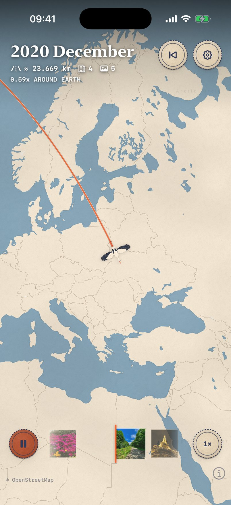
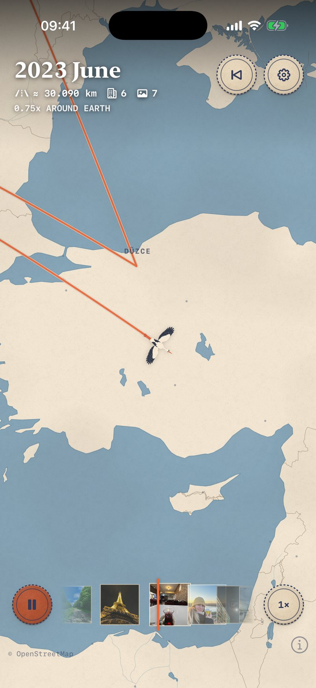
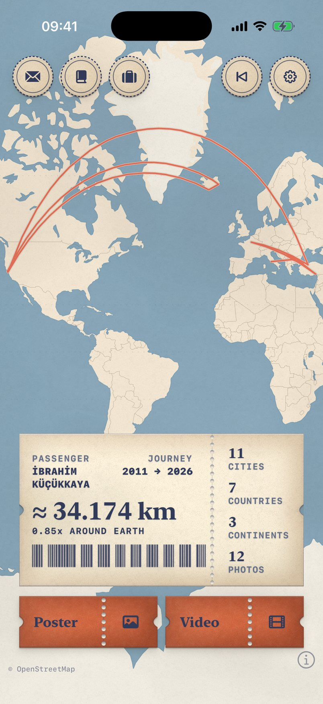
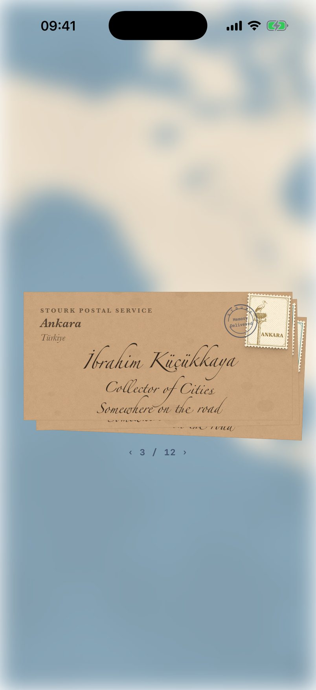
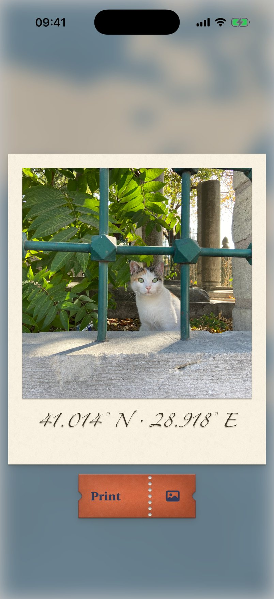
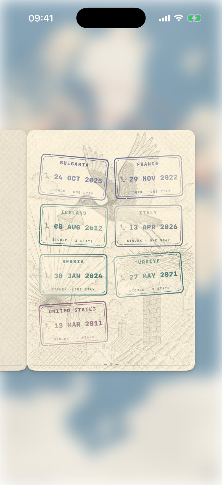
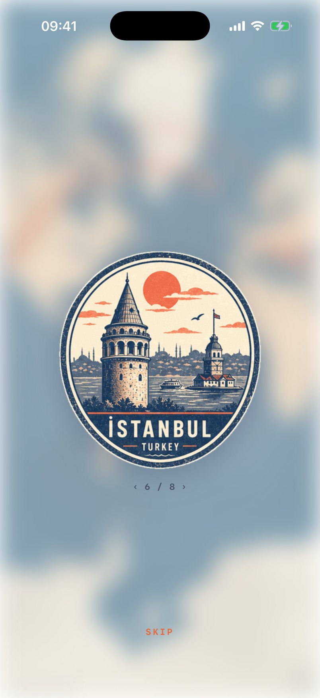
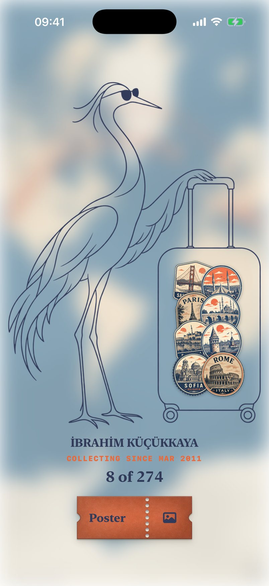

Yolculukların
canlanıyor.
Sakladığın her fotoğraf nerede ve ne zaman çekildiğini zaten biliyor. Stourk yalnızca bunu okur ve leyleği yıllarının üstünde, şehir şehir, iPhone’undan hiç çıkmayan bir haritada uçurur.
HİÇBİR ŞEY YÜKLENMEZ · HESAP YOK · ANALİTİK YOK
Yılları seç.
Yolculuğu başlat.
Biletin üstünde hayatından bir dilim seç: bir yıl, bir yaz ya da hepsi. Sonra yolculuğu başlat.

Yıllarını Stourk’la yeniden uç.
Leylek aralarına çizgiyi çekerken harita şehirden şehre kayar. Her yolculuk izini bırakır; sonunda yılların pano boyunca tek bir rotadır.


Hayatın için
bir biniş kartı.
Leylek konduğunda bir biniş kartı alırsın: yoldaki günler, şehirler, mesafe ve aslında takvimin olan bir barkod; fotoğraf çektiğin her gün için bir çubuk kümesi. Poster olarak kaydet ya da bütün uçuşu video olarak dışa aktar.

Her şehir sana bir mektup yazar.
Uçuştan sonra posta gelir. Gittiğin her şehirden, sana adreslenmiş bir zarf. Yırtıp aç: önce şehrin kendi notu, sonra baskı olarak fotoğrafların çıkar.

Zarfı aç
Her şehrin sana söyleyecek bir şeyi var. Ne yazdığını zarfı yırtan okur.
Sonra baskılar
Notun arkasında o şehirde çektiğin fotoğraflar, ayağında tarihleriyle. Birine dokun, eline al.
Fotoğrafların,
baskı olarak.
Her baskı doğrudan kütüphanenden, fotoğrafları çektiğin sırayla gelir. Hiçbir şey başka bir yere kopyalanmaz.

Gezilerinle damgalı
bir pasaport.
On iki gravürlü sayfa ve gittiğin her yer için bir damga. Sayfaları gerçek bir pasaporttaki gibi çevir; bir de telefonunu eğ.

Yolda kazanılmış
etiketler.
Gittiğin her yer için bir etiket, teker teker sana dağıtılır. Mektupların ve pasaportun yanında, bavulunda dururlar; sen gezdikçe bavul dolar.


Uçuşu bas
Bitmiş harita ve biniş kartı, doğrudan ekrandan poster olarak kaydedilir.
Filmi dışa aktar
Bütün yolculuk iPhone’unda video olarak işlenir. Basılırken Stourk yolculuğunun istatistiklerini önüne serer.
İstediğin dilim
Bir yaz, on yıl ya da ilk fotoğraftan bu yana her şey. Bilgiler ve etiketler seçtiğin yılları izler.
iPhone’unda kalan: her şey.
- Stourk fotoğraflarınla kayıtlı tarih ve konumu okur; senin hakkında başka hiçbir şeyi değil.
- Hesap yok, giriş yok, bize ait sunucu yok. Hiçbir şey yüklenmez, asla.
- Analitik yok, takip yok, seni izleyen üçüncü taraf SDK yok.
- Harita karoları her harita uygulamasındaki gibi OpenFreeMap ve OpenStreetMap katkıcılarından gelir.
- Dizini istediğin zaman sil. Fotoğraflarına asla dokunulmaz.